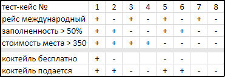
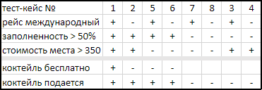
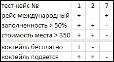

Задание
Если самолет заполнен более, чем на половину и стоимость одного места больше 350, то коктейли подаются бесплатно, если это не внутренний рейс.
На внутренних рейсах коктейли всегда платные. Коктейли подаются на всех рейсах, заполненных более, чем на половину независимо от того,
рейс внутренний или международный.
Решение
В данном случае целесообразно обратиться к построению матрицы принятия решений (есть несколько зависимых переменных и результат их взаимодействия).
Примечание. Не принимаются во внимание входящие данные (демонстрация владения техникой тестирования логики).
Поэтому число тест-кейсов сокращается максимально за счет удаления дублей (оставляя только случаи с переменными, влияющими на результат логических вычислений).

Группировка комбинаций, приводящих к аналогичным результатам.

Кейсы 7,8,3,4 приводят к одинаковому результату, который зависит только от значения переменной "заполненность",
поэтому вместо четырех можно оставить один.
Кейсы 5,6 отличны только в значении переменной "рейс", не влияющей на результат,
поэтому 6 кейс можно удалить. 2 и 5 кейсы различный в параметре "стоимость", также не влияющей на результат.
Таким образом, остается только три комбинации(тест-кейса), покрывающих логику.
